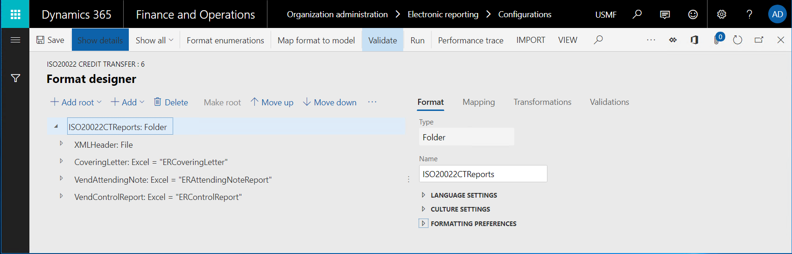
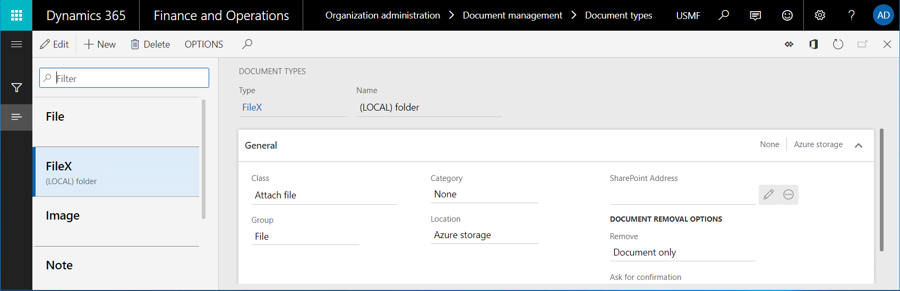
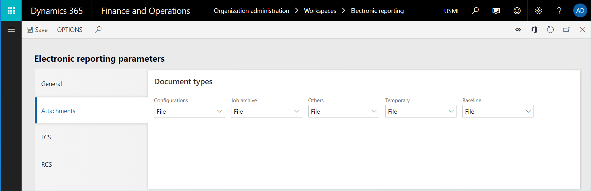
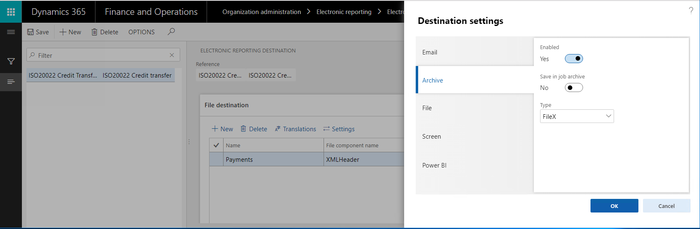

Angeben eines benutzerdefinierten Speicherorts für generierte Dokumente
[!include[banner](../includes/banner.md)]Mit der Anwendungsprogrammierschnittstelle (API) des Framework der elektronischen Berichterstellung (ER) können Sie die Liste der Speicherorte für Dokumente, die von ER-Formaten generiert werden, erweitern. Dieses Thema enthält einen Überblick über die Hauptaufgaben, die Sie erledigen müssen, um einen benutzerdefinierten Speicherort hinzuzufügen.
Voraussetzungen
Sie müssen eine Topologie bereitstellen, die einen fortlaufenden Build unterstützt. (Weitere Informationen finden Sie unter Bereitstellen von Topologien, die fortlaufenden Build und Testautomatisierung unterstützen.) Für eine der folgenden Rollen benötigen Sie Zugriff auf diese Topologie:
- Entwickler für elektronische Berichterstellung
- Funktionaler Berater für elektronische Berichterstellung
- Systemadministrator
Sie müssen zudem Zugriff auf die Entwicklungsumgebung für diese Topologie haben.
Erstellen oder Importieren einer ER-Formatkonfiguration
In der aktuellen Topologie erstellen Sie ein neues ER-Format, um Dokumente zu generieren, für die Sie einen benutzerdefinierten Speicherort hinzuzufügen möchten. Alternativ importieren Sie ein vorhandenes ER-Format in diese Topologie.

Important
Das ER-Format, das Sie erstellen oder importieren, muss mindestens eines der folgenden Formatelemente enthalten:
- Datei
- Ordner
- Merge-Programm
- Anhang
Erstellen eines neuen Dokumenttyps
Um festzulegen, wie Dokumente, die von einem ER-Format erzeugt werden, weitergeleitet werden, müssen Sie Elektronische Berichtsziele (ER) konfigurieren. In jedem ER-Ziel, das konfiguriert wird, um generierten Dokumente als Dateien zu speichern, müssen Sie einen Dokumenttyp des Dokumentverwaltungsframework angeben. Verschiedene Dokumenttypen können verwendet werden, um Dokumente weiterzuleiten, die von verschiedenen ER-Formaten generiert werden.
- Fügen Sie einen neuen Dokumenttyp für das ER-Format hinzu, das Sie bereits erstellt oder importiert haben. In der folgenden Abbildung lautet der Dokumenttyp FileX.
- Um dieses Dokumenttyp von anderen Dokumenttypen zu unterscheiden, schließen Sie ein bestimmtes Schlüsselwort in seinem Namen ein. Beispielsweise lautet der Name in der folgenden Abbildung (LOKALER) Ordner.
- Geben Sie im Feld Klasse die Option Datei zuordnen an.
- Geben Sie im Feld Gruppe die Option Datei an.

Note
Dokumenttypen sind unternehmensspezifisch Zur Verwendung eines ER-Formats mit einem konfigurierten Ziel in mehreren Unternehmen müssen Sie einen separaten Dokumenttyp für jedes Unternehmen konfigurieren.
Quellcode überprüfen
Überprüfen Sie den Code der insertFile()-Methode der Klasse ERDocuManagement. Beachten Sie, dass das Ereignis AttachingFile() ausgelöst wird, während die generierte Datei an einen Datensatz angefügt wurde.
/// <summary>
/// Inserts file as attachment in Document Management.
/// </summary>
/// <param name = "_owner">A record as the attachment owner.</param>
/// <param name = "_stream">The file stream.</param>
/// <param name = "_filePath">The file path with name.</param>
/// <param name = "_attachmentName">The name of file attachment.</param>
/// <returns>The reference to inserted file.</returns>
[Hookable(false)]
public DocuRef insertFile(
Common _owner,
System.IO.Stream _stream,
str _filePath,
str _attachmentName,
DocuTypeId _docuTypeId)
{
DocuRef docuRef;
if (_stream)
{
DocuType::createDefaults();
if (!this.isDocuTypeValid(_docuTypeId))
{
throw error(strFmt("@ElectronicReporting:DocuTypeIsNotValid", _docuTypeId));
}
var args = ERDocuManagementAttachingFileEventArgs::construct(_owner, _stream, _filePath, _attachmentName, _docuTypeId);
ERDocuManagementEvents::onAttachingFile(args);
if (args.isHandled())
{
docuRef = args.getDocuRef();
}
else
{
docuRef = this.attachFile(_owner, _stream, _filePath, _attachmentName, _docuTypeId);
}
}
return docuRef;
}
Das Ereignis AttachingFile() wird ausgelöst, wenn die folgenden ER-Ziele verarbeitet werden:
- Archiv – Wenn das Ziel verwendet wird, wird ein neuer Datensatz für das ER-Format, das ausgeführt wird, in der ERFormatMappingRunJobTable-Tabelle erstellt. Das Feld Archiviert in diesem Datensatz wird auf Falsch festgelegt. Wenn das ER-Format erfolgreich ausgeführt wird, wird das generierte Dokument an diesen Datensatz angefügt, und das Ereignis AttachingFile() wird verwendet. Der Dokumenttyp, der in diesem ER-Ziel ausgewählt wird, bestimmt den Speicherort für die angefügte Datei (Microsoft Azure-Speicher oder ein Microsoft SharePoint-Ordner).
- Einzelvorgangsarchiv – Wenn dieses Ziel verwendet wird, wird ein neuer Datensatz für das ER-Formular, das ausgeführt wird, in der ERFormatMappingRunJobTable-Tabelle erstellt. Das Feld Archiviert in diesem Datensatz wird auf Wahr festgelegt. Wenn das ER-Format erfolgreich ausgeführt wird, wird das generierte Dokument an diesen Datensatz angefügt, und das Ereignis AttachingFile() wird verwendet. Der Dokumenttyp, der in den ER-Parametern konfiguriert wird, bestimmt den Speicherort für die angefügte Datei (Azure-Speicher oder ein SharePoint-Ordner).

Das Ziel einer elektronischen Berichterstellung konfigurieren
- Konfigurieren Sie das archivierte Ziel für eines der zuvor genannten Elemente (Datei, Ordner, Merger-Programm oder Anhang) des ER-Formats, das von Ihnen erstelltoder importiert wurde. Eine Anleitung finden Sie unter ER-Konfigurationsziele.
- Verwenden Sie den Dokumenttyp, den Sie zuvor für das konfigurierte Ziel hinzugefügt haben. (Im Beispiel in diesem Thema lautet der Dokumenttyp FileX.)

Quellcode ändern
Fügen Sie Ihrem Microsoft Visual Studio-Projekt eine neue Klasse hinzu, und schreiben Sie Code, um das AttachingFile()-Ereignis zu abonnieren, das zuvor erwähnt wurde. (Weitere Informationen zum Erweiterbarkeitsmuster, das verwendet wird, finden Sie unter Reaktion unter Verwendung von EventHandlerResult) Beispiel: In der neuen Klasse schreiben Sie Code, der die folgenden Aktionen ausführt:
- Generierte Dateien in einem Ordner des lokalen Dateisystems des Servers speichern, auf dem Application Object Server (AOS) ausgeführt wird.
- Speichern Sie diese generierten Dateien nur, wenn der neuen Dokumenttyp (beispielsweise der Typ FileX mit "(LOKALE)-Schlüsselwort im Namen) verwendet wird, während eine Datei an den Datensatz im ER-AusführungsJobprotokoll angefügt ist.
class ERDocuSubscriptionSample { void new() { } [SubscribesTo(classStr(ERDocuManagementEvents), staticDelegateStr(ERDocuManagementEvents, attachingFile))] public static void ERDocuManagementEvents_attachingFile(ERDocuManagementAttachingFileEventArgs _args) { if (!_args.isHandled()) { DocuType docuType = DocuType::find(_args.getDocuTypeId()); if (strContains(docuType.Name, '(LOCAL)')) { _args.markAsHandled(); var stream = _args.getStream(); if (stream.CanSeek) { stream.Seek(0, System.IO.SeekOrigin::Begin); } using (var localStream = System.IO.File::OpenWrite(@'c:\0\' + _args.getAttachmentName())) { stream.CopyTo(localStream); } } } } }Ihr Projekt neu erstellen
Ausführen des erstellten oder importierten ER-Formats
- Führen Sie das ER-Format aus, das von Ihnen erstellt oder importiert wurde.
- Wechseln Sie zu Organisationsverwaltung >Elektronische Berichterstellung > Einzelvorgänge für elektronische Berichterstellung. Suchen Sie den Datensatz, der für diesen Ausführungseinzelvorgang erstellt wurde, und dem die generierte Datei angehängt wurde.
- Untersuchen Sie den lokalen C:\0-Ordner, um dieselbe generierte Datei zu finden.